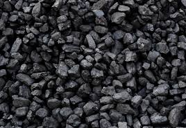
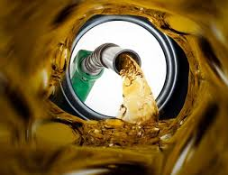
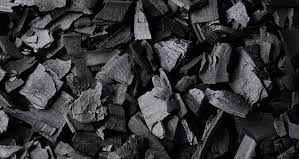
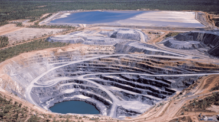
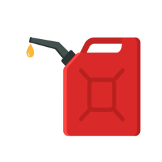
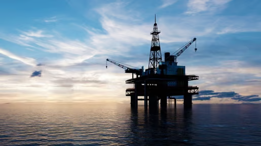
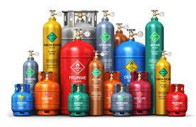

Exploração e Extração de Recursos:
Carvão mineral
Petróleo bruto
Gás natural

Refino e Processamento:
Refino de petróleo para produção de combustíveis
Processamento de gás natural para distribuição

Soluções Energéticas Sustentáveis:
Consultoria para transição energética
Desenvolvimento de tecnologias de captura de carbono

Mineração Sustentável:
Métodos de extração com menor impacto ambiental
Recuperação de áreas mineradas

Comércio e Distribuição:
Venda de combustíveis para indústrias e consumidores
Logística de transporte de recursos energéticos

Serviços de Pesquisa e Desenvolvimento:
Inovação em técnicas de exploração e refino
Desenvolvimento de novos produtos energéticos

Treinamento e Capacitação:
Programas de formação em práticas sustentáveis para funcionários e parceiros
Workshops sobre eficiência energética e responsabilidade ambiental

Projetos de Responsabilidade Social:
Iniciativas comunitárias em áreas de operação
Programas de apoio ao desenvolvimento local